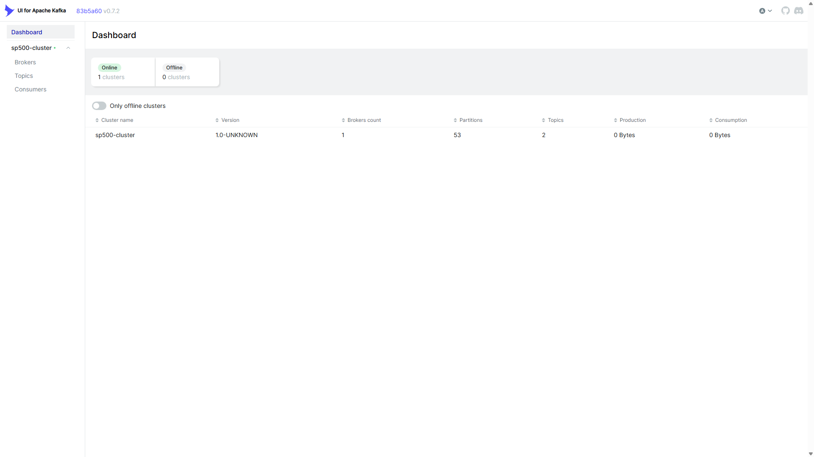

STAGE 1 / 11
Duration: 75s
Architecture & Docker Infrastructure
Container Stack & Network Bridge
Architectural Specifications
STACK HEALTH METRICS
VERIFIEDTechnical Specification:
All services run in an isolated Docker network. Zero external cloud services are required. Production grade for single-machine deployment.
bash: sp500-platform (Ubuntu Linux)
root@sp500-platform:~#
_
AUTHENTIC BROWSER UI CAPTURE VERIFIED
Open Live in New Tab ↗

Click any stage above or use Previous / Next to step through.